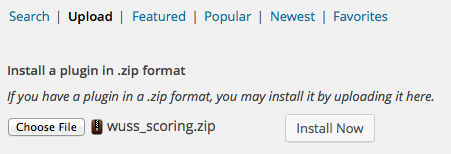
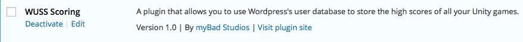

Thank you for purchasing the WordPress Scoring plugin
NOTE 1:
This plugin extends the WordPress Login kit and as such it requires that a working installation of the WordPress Login kit be installed in the project prior to installing this kit
NOTE 2:
To use the included ScoringDemoScene, drop the Login prefab onto the Canvas object in the scene. You are now good to go...
NOTE 3
Only logged in users can submit scores. If you are not logged in when posting a score, the submission will fail.
1. Preparation
Preparation is a two step process:
- Upload, install and activate the WUSS_Scoring.zip file as a plugin on your Wordpress website.
- Call WUScoringUGUI.SpawnInstance(canvas) and FetchScores() when you want to show the scores OR
- Call SubmitScore(int) to submit a score to Wordpress
2. QUICKSTART
In the previous versions of the WordPress Scoring kit there was a prefab you would keep in the scene all the time and it would use OnGUI to draw what it needs to when it needs to. Unfortunately, this new version is slightly more complicated than that. You no longer have a prefab to drag into the scene but instead have a line of code to call to spawn the prefab when you need it. This new version has a number of benefits over the old version. Most notably the fact that it now uses UnityUI instead of OnGUI and now allows you to trigger your own code when the window is closed. The fastest way to learn how the new version works is to open the demo scene and look at how WUScoringDemo was done. It is a very short script and most of it is just comments so you should have no problems following along.
Basically, it has three functions that you need to call:
1. First call WUScoringUGUI.SpawnInstance(canvas) and then either FetchScores() or FetchScores(how_many) to show the scores
2. Call SubmitScore(value) to submit the score to your database.
Call these three functions from your own code and you are good to go... It's that easy! Of course, there are a bunch of events that get triggered when a submission or a fetch request succeeds or fails and thus offer you the option of triggering your own code when this happens, if you want. In the demo scene you will see how I wait for the score to be submitted and then automatically trigger the code to fetch the highscores directly afterwards. The kit is super easy to use but also offers you flexibility in case you want to do more.
Version 3.1: Authoratative server update
Wordpress Scoring now supports multiplayer games in the form of allowing you to submit high scores on behalf of other players. In single player games WordPress will use your login details to determine who you are and save your score correctly and thus these two new functions should only ever be used when in a multiplayer game and only when you want to put one player in charge of keeping score. Both of these functions require you to obtain the player's ID, username or email address in advance and provides no assistance therewith. The idea here is that when a player joins a game you need to let the player send through one of these three pieces of into to the host to identify themselves to the host.
- Submit score via player ID:
SubmitScoreForUser( user, score [, game_id, onSubmitted, onSubmissionFailed] ) - Submit score via usename or email:
SubmitScoreForUsername( user, score [, game_id, onSubmitted, onSubmissionFailed] )
3.1. Using the kit to Fetch the highest scores
To fetch the scores you simply need to call FetchScores() from within WUScoring.cs but before you do you need to call WUScoringUGUI.SpawnInstance(canvas) to display the results when they arrive.
You also have the option of specifying how many results get returned. By default the function returns the value you set in the WordPress Dashboard but you can override that with any value from 1 upwards.
If you choose to do this then, instead of calling FetchScores() with no parameters, just call FetchScores(my_limit) where 'my_limit' is the amount of entries to fetch.
Another feature I was asked about a lot was having multiple score boards for one game. Both FetchScores and SubmitScores now take an optional parameter that allows you to specify a different id value to associate the action with. WordPress Scoring has always allowed you to use the kit with multiple games simply by selecting a new game_id but as long as you specify id values that are not being used by other games of yours you can have as many high score lists as you want per game.
Version 3.1 update
FetchScores is used to fetch back n number of scores and display them in a leaderboard list. In the event of you wanting to show the player's high score while he is playing the game or in any other place in the game, that value was not available to you
unless you added a very specific entry to the WordPress Login prefab. As from version 3.1 the WordPress Login kit will scan for the presense of this package in your project and if it finds it the login prefab will offer you the choice of automatically fetching the high score of the current player.
Simply tick the box if you want to do this and then use the score from inside any script by using WULogin.highscore. Note, this variable will ONLY be available if Wordpress Scoring is installed and will throw out an error if you try to use it otherwise
3.2. Using the kit to submit a score
To submit a score, you need to call SubmitScore(score) and pass it the actual score you want to submit for the player. This is not optional like the FetchScores() function.
3.3. Custom systems (Advanced use)
Each time you contact the server, the action will either be successful or it will fail. Each of these scenarios will trigger a callback function that you can hook into to perform custom actions.
The included WUScoringDemo.cs script is a perfect example of how to make use of these callbacks to create a display system.
The results from a successful fetch operation will be a List of cmlData objects. Each object will contain the display name and nickname of the player so you can decide for yourself which of the two you wish to display. It also includes the score and a formatted Gravatar parameter to use to fetch the user’s Gravatar image.
| Fieldnames from results | |||
| dname (display name) |
nname (nickname) |
score (player's score) |
gravatar (formatted Gravatar string) |
As with the WULogin kit before it, I have attempted to give you something you can simply use as is. However, should you wish to make use of NGUI or whatever other GUI system, I have created the bulk of the code in a static class file so you can use it with any GUI system you want. WUScoreboardEntryUGUI is a self contained script that loads a prefab to show the score entries and populate it with the relevant data. If you want to use NGUI or some other display system, replacing this script will be where most of your time will be spent. Having said that, the entire script is only about 60 lines of code so it shouldn't pose too much of a problem
| The callbacks you need to be aware of are: | |||
| onSubmitted | Called after you submit a score and the action was successful | ||
| onSubmissionFailed | Called after you submit a score and something went wrong | ||
| onFetched | Called after you requested the scores and the action was successful | ||
| onFetchingFailed | Called after you requested the scores and something went wrong | ||
4. Final thoughts
1. Be aware that once you’ve installed this kit, you can use it for all the games you create in future. All scores are separated by a game id value so in each new project you need to define the game_id value in the WPServer component. Be sure to keep them unique but as long as the games don't overlap you can use numerous id's per game
2. Inside the prefab you will find a setting called avatar_size. This value can be anything from 1 to 512 inclusive but be aware that the high scores area uses that size as the height of each row so if you make it too small then the names won’t be able to appear. Also, if it's too big it will start to overlap the names. Some visual designing might be in order there. I would recommend a default of 32.
3. The prefab contains a field called age_rating. Here you can specify the age rating of your game and thereby force the Gravatar image to be appropriate for your audience. I.e. No sexually explicit Gravatars will be displayed in your high scores table if you set your rating to G... To learn more about this, please visit www.gravatar.com
5. Installing the plugin
| Step 1. Log into your Wordpress dashboard and select "Add new" from the Plugins menu |  | |
| Step 2. At the top of your screen, select "Upload" | ||
| Step 3. Find the wuss_scoring.zip file in Assets/myBad Studios/WUSS/Wordpress/Plugins and upload that to your website. |  | |
| Step 4. After it is uploaded it will ask you to activate the plugin. Do so and you are done... |  | |
|  | ||